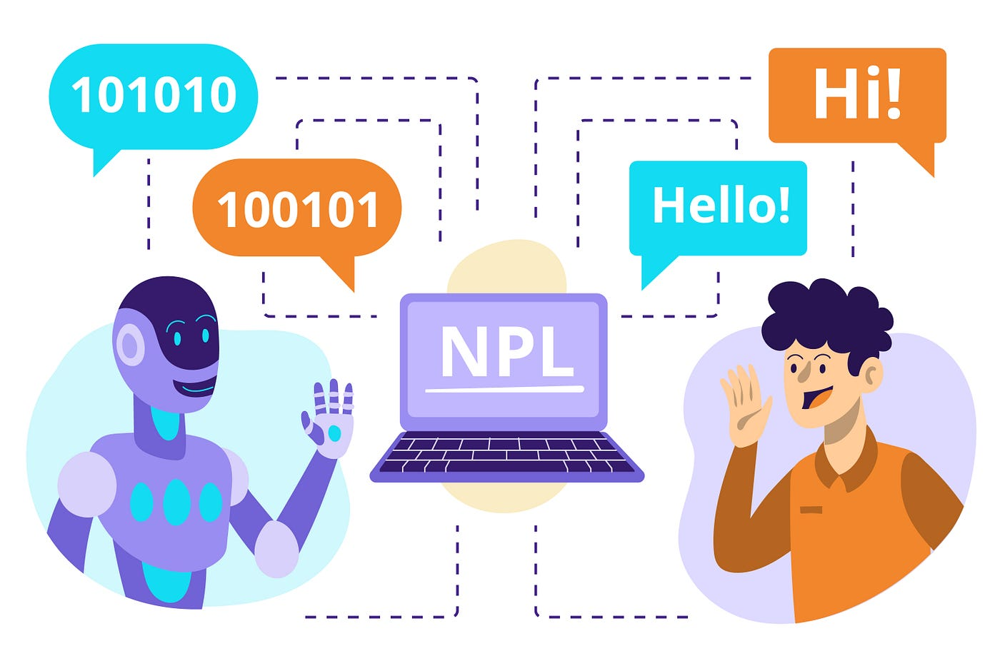

Introducción a la Inteligencia Artificial
La Inteligencia Artificial (IA) es uno de los campos más revolucionarios y dinámicos de la tecnología
moderna, con el potencial de transformar radicalmente múltiples industrias y aspectos de la vida
cotidiana. Se refiere a la capacidad de las máquinas y sistemas para realizar tareas que
tradicionalmente requieren de inteligencia humana, como la toma de decisiones, el reconocimiento de
patrones, la resolución de problemas complejos y la interacción en lenguaje natural.
Entre los subcampos más importantes de la IA se destacan el aprendizaje automático (Machine Learning),
que permite a los sistemas aprender y mejorar su rendimiento con el tiempo sin intervención humana, y el
procesamiento del lenguaje natural (NLP), que dota a las máquinas de la capacidad de comprender y
comunicarse en el lenguaje humano. Estas tecnologías están impulsando innovaciones en áreas tan diversas
como la salud, el transporte, la educación y el entretenimiento, haciendo de la IA una fuerza motriz en
el desarrollo de la sociedad digital.
A medida que la IA sigue evolucionando, surgen nuevas oportunidades y desafíos, tanto éticos como
técnicos, que nos invitan a explorar más a fondo su impacto y sus posibilidades para el futuro.
¿Qué es Machine Learning?
El Machine Learning es una rama de la Inteligencia Artificial que se centra en la creación de algoritmos y modelos que permiten a las computadoras aprender de los datos y mejorar su rendimiento en tareas específicas sin ser programadas de manera explícita para cada una de ellas. En lugar de seguir instrucciones rígidas, los sistemas de Machine Learning identifican patrones, hacen predicciones y toman decisiones basadas en datos, adaptándose y ajustándose a medida que reciben más información.

El proceso de Machine Learning generalmente sigue tres pasos principales:
- Entrenamiento: El sistema recibe un conjunto de datos conocidos (llamados "datos de entrenamiento") y aprende a partir de ellos, construyendo un modelo. Este modelo busca patrones en los datos que puedan ser utilizados para realizar predicciones o tomar decisiones.
- Validación: Durante este paso, el modelo se prueba con nuevos datos (generalmente un subconjunto de los datos originales) para ver qué tan bien puede predecir o clasificar sin errores.
- Prueba: Finalmente, el modelo entrenado se prueba con datos completamente nuevos, lo que permite evaluar su rendimiento en condiciones reales.
Existen varios tipos de Machine Learning, siendo los más comunes:
- Aprendizaje Supervisado: El algoritmo se entrena con datos etiquetados, donde las respuestas correctas ya se conocen, y el objetivo es aprender a predecir los resultados de nuevos datos no etiquetados.
- Aprendizaje No Supervisado: Aquí, el algoritmo se enfrenta a datos sin etiquetas, buscando patrones ocultos o agrupaciones dentro de los datos.
- Aprendizaje por Refuerzo: Este tipo de aprendizaje se basa en un sistema de recompensas y castigos. El modelo aprende a tomar decisiones a través de prueba y error, mejorando su comportamiento con el tiempo.
¿Qué es el Procesamiento del Lenguaje Natural (NLP)?
El Procesamiento del Lenguaje Natural (NLP) es un subcampo de la Inteligencia Artificial que se ocupa de la interacción entre las computadoras y el lenguaje humano. Su objetivo principal es permitir que las máquinas comprendan, interpreten y generen el lenguaje de manera que sea útil y significativa para los humanos.
NLP combina varias disciplinas, incluyendo la lingüística, la informática y la inteligencia artificial, y se utiliza en una amplia variedad de aplicaciones. Algunas de las tareas más comunes en NLP incluyen:
- Análisis de Sentimientos: Determinar la actitud o emoción de un texto, como si es positiva, negativa o neutral. Esto es útil para empresas que desean entender la opinión de los clientes sobre sus productos o servicios.
- Traducción Automática: Convertir texto de un idioma a otro, como lo hace Google Translate. Esta tarea implica entender el contexto y la gramática de ambos idiomas para asegurar traducciones precisas.
- Reconocimiento de Voz: Convertir el habla en texto, como en asistentes virtuales como Siri o Alexa. Esto permite que los usuarios interactúen con sus dispositivos a través de comandos de voz.
- Generación de Texto: Crear texto coherente y relevante a partir de datos o instrucciones, como en chatbots que pueden mantener conversaciones con los usuarios.
- Extracción de Información: Identificar y extraer datos relevantes de grandes volúmenes de texto, como nombres, fechas o lugares, lo cual es útil en análisis de datos y búsqueda de información.
El NLP enfrenta desafíos significativos debido a la complejidad del lenguaje humano, que incluye
ambigüedades, modismos y variaciones en el contexto. Sin embargo, con el avance de técnicas de aprendizaje
automático y la disponibilidad de grandes conjuntos de datos, el NLP ha avanzado considerablemente,
mejorando la precisión y la efectividad de las aplicaciones.
En resumen, el Procesamiento del Lenguaje Natural es fundamental para construir interfaces más naturales y
efectivas entre los humanos y las máquinas, facilitando una comunicación más fluida y comprensible.
Acerca de Nosotros
En nuestra página, nos apasiona ofrecer soluciones innovadoras y accesibles para nuestros usuarios. Nos
especializamos en proporcionar contenido y herramientas útiles que hacen la vida más fácil, desde
tecnología hasta recursos educativos y más. Creemos en el poder de la tecnología para transformar la
manera en que nos conectamos, aprendemos y resolvemos problemas.
Nuestro objetivo es ofrecer una experiencia de usuario sencilla e intuitiva, con un diseño moderno y
funcional. Estamos comprometidos con la calidad y la satisfacción de quienes nos visitan, siempre
buscando nuevas maneras de mejorar y adaptarnos a las necesidades cambiantes de nuestros usuarios.
Gracias por ser parte de nuestra comunidad. ¡Explora, descubre y únete a nosotros en esta emocionante
aventura digital!